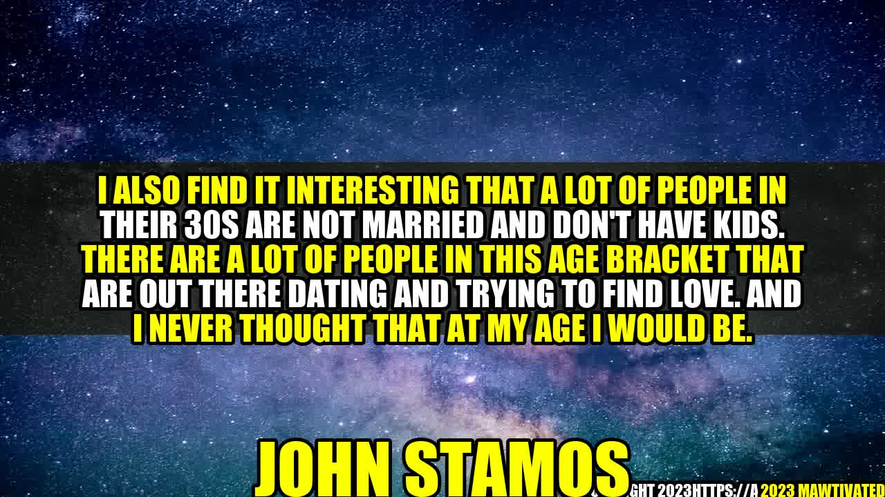

The Unconventional Path to Finding Love at 30

It was a beautiful summer evening when John Stamos felt a sudden urge to take a walk on the beach. With no particular destination in mind, he strolled along the shore, taking in the salty air and the sound of the waves crashing against the shore. As he walked, he couldn't help but reflect on his life.
"I also find it interesting that a lot of people in their 30s are not married and don't have kids. There are a lot of people in this age bracket that are out there dating and trying to find love. And I never thought that at my age I would be."
John was already in his mid-30s and had never been married. He had always been a bit of a late bloomer, focusing on his career and his passions, rather than settling down with a partner. But now, as he watched the sun set over the water, he couldn't help but wonder if he had missed his chance at love.
The Changing Landscape of Love and Marriage
John's story is hardly unique. In recent years, there has been a marked shift in the way people approach relationships, marriage, and parenthood. With more women in the workforce, more access to contraception, and changing attitudes about gender roles, people are waiting longer to get married and start families. In fact, according to the Pew Research Center, the median age of first marriage in the United States is now 30 for men and 28 for women, up from 23 for men and 21 for women in 1960.
At the same time, the rise of online dating and social media has opened up new possibilities for people to meet and connect with potential partners. And with more opportunities for travel and exploration, people are no longer limited to finding love in their own hometowns. All of these factors have combined to create a new landscape of love and marriage, one that is more fluid, more diverse, and more unconventional than ever before.
The Upside of Dating at 30
Although John had initially been hesitant about dating in his 30s, he soon discovered that there were many benefits to being single and searching at this stage of his life. For one, he had more experience and self-awareness than he had in his 20s, which made him better able to communicate his needs and desires to potential partners. He also had a wider social circle and a more established career, which gave him more opportunities to meet interesting and attractive people.
Another advantage of dating at 30 is that people are generally more mature and ready for serious relationships. Many of the people John met through online dating were looking for long-term commitment, just like he was. And because they had already sorted through the superficial criteria of youth and beauty, they were more likely to focus on important qualities like compatibility, shared interests, and emotional intelligence.
How to Maximize Your Chances of Finding Love at 30
- Be open-minded. Don't limit yourself to a narrow set of criteria. Sometimes the most unlikely pairings can lead to the most fulfilling relationships.
- Build a strong social network. Attend events, join clubs, and participate in activities that you enjoy. Not only will you meet new people, but you'll also have more fun in the process.
- Be clear about your values and priorities. Before you start dating, take some time to reflect on what matters most to you in life. This will help you filter out people who aren't a good match and focus on those who share your goals and values.
In Conclusion: Why It's Never Too Late to Find Love
The journey to finding love can be a long and winding one, but it's worth it if you find someone who makes your heart sing. Whether you're in your 20s, 30s, or beyond, there are always new opportunities to connect with people, explore yourself, and grow as a person. So if you're still searching for love, don't give up hope. The best is yet to come.
Curated by Team Akash.Mittal.Blog
Share on Twitter Share on LinkedIn